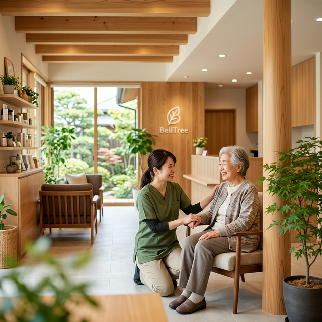

人生の後半を、
もっと安心できる時間に。
運動習慣づくりから、訪問支援、介護、終活準備まで——かかりつけの窓口が変わらない支援体制で、あなたとご家族の生活に寄り添います。

人生の変化に合わせて、
支援が途切れない構造
運動から介護までを個別のサービスとしてではなく、「一つの連続した支援」として提供します。状態が変わっても、ご相談窓口はべるつりーのままです。
お悩みから探す
いま感じているお悩みに近い項目を選んで、詳しい情報と相談の導線を確認ください。
専門家によるチーム支援
国家資格・専門資格を持つスタッフがチームで支援します。
健康運動指導士
安全で効果的な運動プログラムを計画・指導します。
鍼灸マッサージ師
国家資格に基づき、ご自宅での痛みの緩和や機能回復を担います。
ケアマネジャー
介護保険制度の活用と、最適な生活設計を共に整理します。
行政書士
成年後見や相続など、見落としがちな将来の法務手続きを支えます。
地域と医療が連携する
安心の支援体制
2011年の創業以来、町田市・南大沢エリアを中心に地域密着の「継続支援」を提供してきました。確かな資格と医療機関・地域包括支援センターとの連携がご家族の安心を支えます。
-
国家資格者による専門チーム
鍼灸マッサージ師、ケアマネジャー、行政書士、健康運動指導士など、各分野のプロフェッショナルが在籍しています。
-
豊富な現場経験
累計16,000回以上の施術実績と、日々260名以上の方と向き合う確かな臨床・現場経験があります。
-
地域との連携体制
町田市周辺の病院、クリニック、地域包括支援センターと密接に連携し、必要な制度への橋渡しを行います。
支援の現場から
途切れない支援体制が、実際の暮らしをどう守るのかをご紹介します。
地域密着のコミュニティ活動
べるつりーは、医療や介護の枠を超え、町田や南大沢の地域に根ざした健康づくりと居場所づくりに取り組んでいます。
よくあるご質問
ご相談前によくいただく疑問やご不安にお答えします。
まだどのサービスを使うか決まっていませんが相談していいですか？
はい、問題ありません。現在の状況をお伺いし、運動、訪問施術、介護、あるいはお住まいの地域の他のサービスの中から最適な選択肢を一緒に考えます。
遠方に住んでいる家族ですが、親のことについて相談できますか？
もちろん可能です。ご家族からのご相談も多くいただいております。ご本人の状況に合わせて必要なサポートを設計いたします。